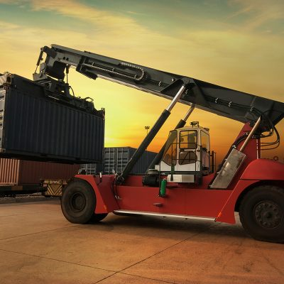
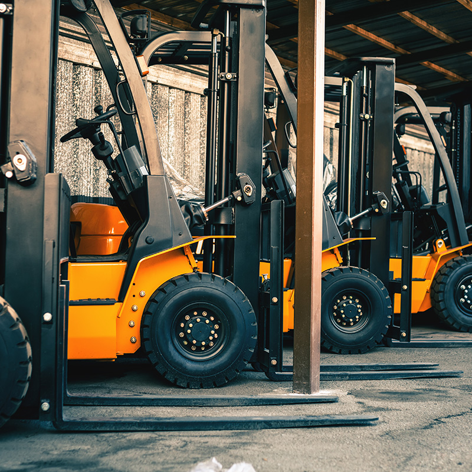

AUTONOMUS LOGISTICS
Autonomous logistics technology collects data and applies the information
in ways that improve the performance or efficiency the machine activity.
In short, autonomous processes become smarter based on information collected during
operation logistics technology.
Autonomous or “self-driving” vehicles process large amounts of information to make
rapid operational decisions withouthuman involvement. In freight transportation networks,
autonomous trucks are being tested in both long, over-the-roadjourneys and for last-mile
routes with multiple, frequent stops. In these cases, human drivers still work as an on-board
co-pilot to the autonomous technology.


×

MAKING THE FUTURE POSSIBLE
The AMHT kit has demonstrated the ability to reduce the manual labor
required to perform material handling missions,both as an operator
assist capability and as a fully autonomous operation.